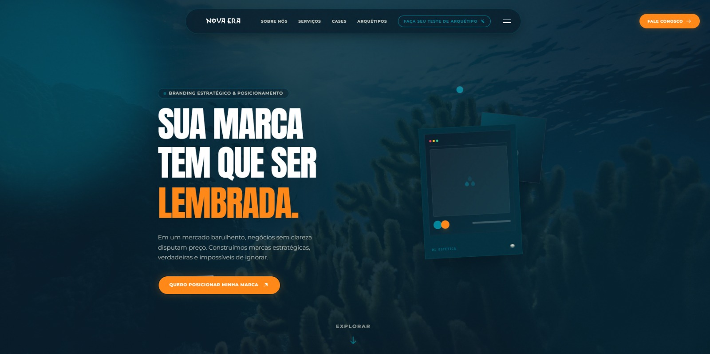
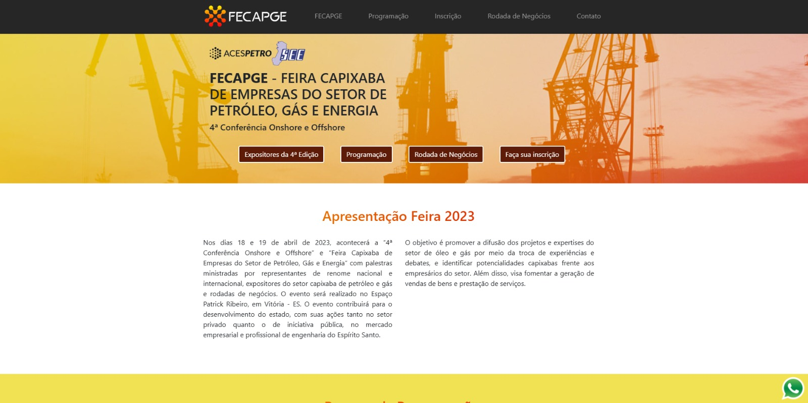

Desenvolvedor Fullstack.
Construindo interfaces reais e funcionais desde 2021.
Muito prazer, sou o Julio.
Sou desenvolvedor Front-end focado em criar produtos web reais com fundamentos sólidos. Acredito que o verdadeiro impacto vem do domínio da base — HTML, CSS e JavaScript — antes de qualquer atalho. Minha experiência envolve manter e evoluir aplicações em ambiente de produção real (Surfguru), lidando com usuários de verdade e problemas reais.
FUNDAÇÃO
- • HTML5 Semântico
- • CSS3 Avançado
- • Vanilla JavaScript
APLICAÇÃO
- • React, Next.js & Node.js
- • TypeScript em Produção
- • APIs RESTful & PostgreSQL
- • CI/CD
Conhecimento Técnico
Tenho experiência sólida com React, Next.js, Node.js e TypeScript em ambientes de produção, experiência com APIs RESTful, otimização de banco de dados PostgreSQL e CI/CD.
Fundação Sólida
Tecnologias que opero com alto nível de confiança, construindo layouts precisos e lógicas puras.
export const App = () => {
return <System />;
}
Conhecimento Prático
Frameworks e ferramentas que integro e utilizo para desenvolver ecossistemas reativos e APIs escaláveis.
Vivência e Exposição
Ambiente e stack com os quais interajo evoluindo infraestruturas, incluindo otimização de banco de dados e pipelines.
Estudos & Evolução
Busca contínua por aprimoramento e compreensão estrutural.
(ATIVO)
Cursos em Andamento
Cursos em Andamento
curso.dev (Felipe Deschamps)
O curso aborda os fundamentos da engenharia de software em profundidade — Git, GitHub, estratégias de branch, Node.js, Next.js, React, PostgreSQL, Docker, CI/CD com GitHub Actions, testes automatizados (Jest, TDD, BDD), APIs REST, segurança (bcrypt, injeção de SQL, sessões, cookies), clean code, refatoração e tomada de decisões arquiteturais. O foco é entender o porquê da existência de cada tecnologia, e não apenas como utilizá-las.
Asimov Academy — Python
Foco em Python com aplicação prática. Aborda fundamentos, lógica, programação orientada a objetos e projetos do mundo real. O objetivo é construir um raciocínio sólido além do ecossistema JavaScript.
EBAC — Engenheiro Front-End (em andamento)
Módulos concluídos: Fundamentos da Web, HTML5, CSS3, JavaScript, Git & GitHub, Lógica, OOP, APIs Web, HTTP, JavaScript Avançado, Responsive Web Design. Estudando atualmente: Metodologia BEM. Próximos passos: SASS, Bootstrap, Tailwind CSS.
(CHECK)
Certificações
Práticas
Certificações Práticas
- Formação completa HTML5 e CSS3 (Alura)
- Lógica JS e PHP Conceitos e Loops (Alura)
- Fundamentos de Design e FlutterFlow (NoCode StartUp)
Projetos & Case
Um pouco da minha realidade diária de produção.
Surfguru Web
A maior plataforma de previsão de surf do Brasil. Minha atuação direta nela representa minha bagagem central de manutenção de código front-end (legado e moderno), em escala e no contato frequente com usuários diários.


Nova Era — Branding Studio
Landing page para estúdio de branding estratégico com design imersivo, animações GSAP, sistema de arquétipos interativo e identidade visual premium. Foco em conversão e posicionamento de marca.
FECAPGE
Site institucional da Feira Capixaba de Empresas do Setor de Petróleo, Gás e Energia. Plataforma informativa com programação de eventos, expositores e inscrições para a conferência.
